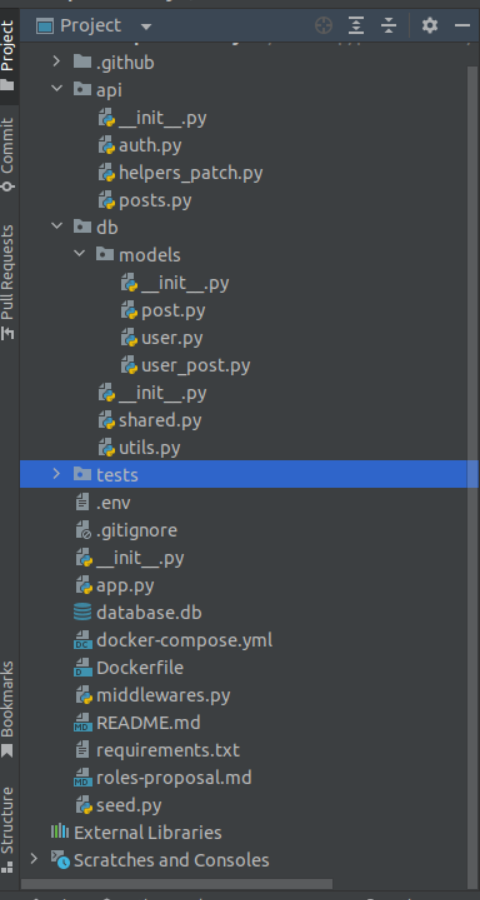
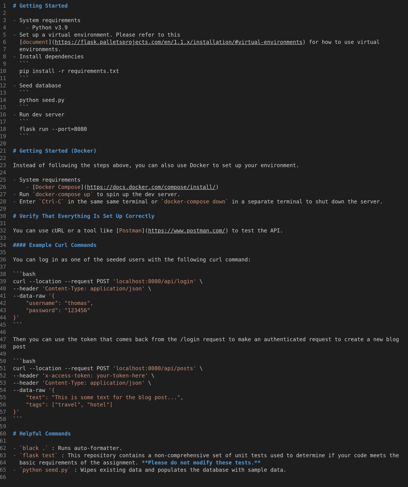
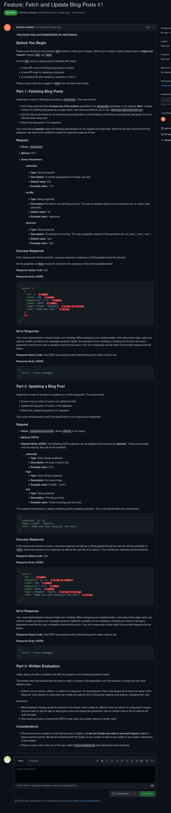
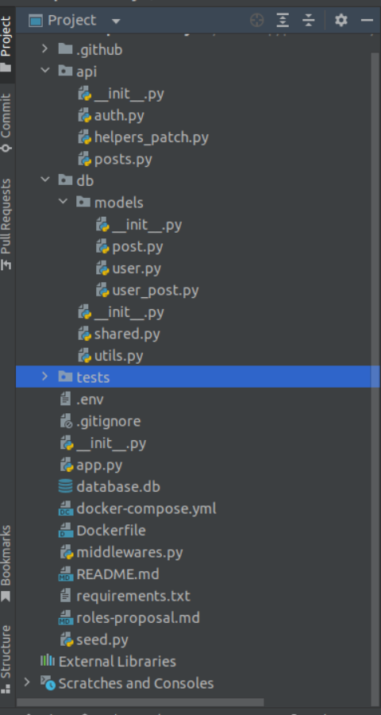
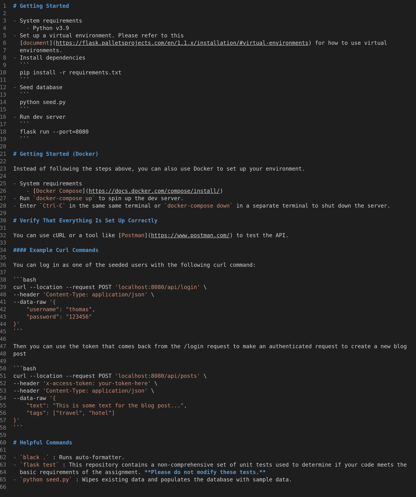
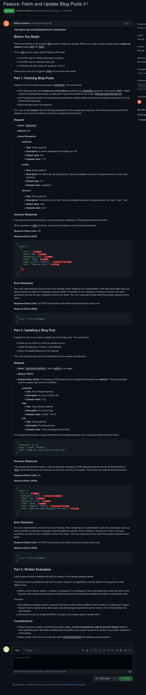

Flask API- build out PATCH route with CRUD operations
image of project structure/file tree
README Instructructions
Github Issues Tab
My contribution via Pull Request code comparison. Dev -> Main

image of project structure/file tree
README Instructructions
Github Issues Tab
